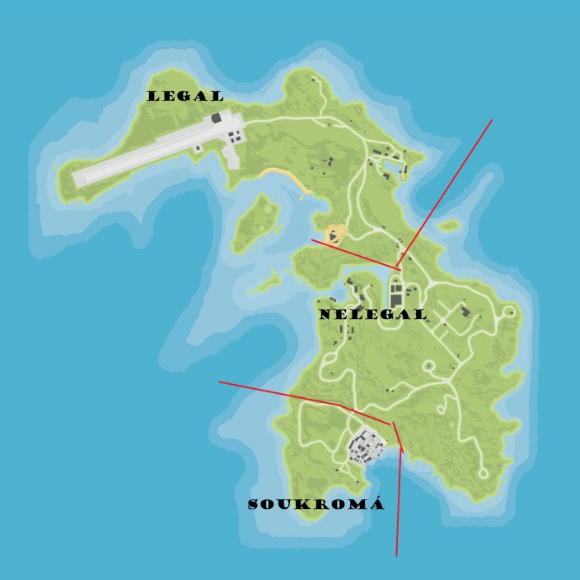

RP
Hraní smyšlené postavy jako v reálném světě, podle roleplay pravidel.
/me
Nahrazování animací, které ve hře nejsou (např. /me utírá krev z čela).
/do
Popisuje vykonávanou činnost a často se očekává reakce od druhých hráčů (např. /do povedlo se vypáčit zámek?)
V /do nesmíte RPit pocity, myšlenky a nadále nesmíte ovlivnit RP jiným hráčům.
❗️do /do se nikdy nesmí lhát❗️
/stav
Popisuje co se hráči stalo (např. /stav má odřenou nohu).
/doc
Popisuje jak dlouho danou činnost hráč vykonává (/Doc 10).
/zde
Popisuje co se na daném místě nachází a ve hře to nelze vidět (např. /zde taška s penězi).
/try
Slouží k náhodnému vygenerování ano / ne.
Zneužívání f3 bugu
Zneužívání f3 např. na probugování skrz zeď či běhání s osobou na carry.
Ic (in character)
Vše okolo tvé postavy v RP, výměna informací v RP.
Ooc (out of character)
Vše, co se dozvíš mimo svoji RP postavu, počítá se do toho i OOC chat a nesmíte to použít IC.
Metagaming
Používání OOC věcí v IC. Pokud vám např. kamarád na Discordu řekne lokaci, kde ho unesli, a vy to použijete IC, je zakázáno. Je zakázané taktéž volání mimo RP např. na Discordu nebo TeamSpeaku.
Mixing
Mixování OOC věcí do IC (např. počkej teď mi vtrhla máma do pokoje). Počítají se i věci jako (počkáme na světlušku).
Powergaming
Provádění nereálných věcí (/me hází auto do jiné galaxie). Počítá se do toho i otáčení auta pomocí WASD.
Peace Time
V tuto dobu nesmí být prováděna nelegální aktivita. Obvykle to nastává během eventů, velkých porad adminů nebo při závažných problémech serveru, např. velkých DDoS útocích.
NonRpDriving
Ovládání vozidla, které by v reálném životě nebylo možné, například ježdění s nízkým autem nebo autem bez offroad pneumatik po offroadovém terénu rychlostí.
NVL
Musíte si vážit svého života, jako byste neměli další šanci.
Trash Talking
Zakázáno psaní nevhodných výrazů a znaků do chatu. Trash Talking zahrnuje také nadávání na adminy či na server.
Non Rp Injuries
Musíte RPit zranění, které odpovídá dané situaci. Například, pokud narazíte do zdi ve vysoké rychlosti, nesmíte jen tak odjet, ale musíte na chvíli zastavit a zahrát to, poté můžete pokračovat v jízdě.
KOS
Zabití na první pohled bez předchozí RP akce.
Passive Rp
Nacházíte se v rušném městě a lidé vás vidí téměř na každém kroku. Dokonce i na venkově jsou lidé, a to, že tam nejsou NPC, neznamená, že by tam v reálném životě nikdo nebyl. Například nesmíte přijít jen tak do hlavní garáže a okrást někoho. Při spáchání zločinu (ve výjimečných situacích, například vykrádačky) na veřejnosti musíte zahrát /911 a místní člověk bude popisovat situaci.
Gross RP
Jde o nechutné RP, jako je mučení, kanibalismus, znásilnění, atd. Musí být schváleno všemi účastníky RP akce. Nelze nutit druhou osobu k převedení majetku pomocí gross RP. Pokud se nejedná o schválený CK (Character Kill), je přísně zakázáno odřezávat jakékoliv končetiny. Používání n-word je zakázáno, dokud nejste v gangu ve své černé postavě.
Asspulling
Jde o vytahování zbraní doslova z "prdele". Nesmíte vytahovat velké zbraně bez batohu (vyjímka pro zarpené pp). Do /stav nesmíte napsat jen "pp", ale i druh zbraně, která je u postavy.
Combat Log
Jde o odpojení se z dané RP akce. Pokud dojde k pádu hry, informujte admina, který vám udělil ban, a akci dohrajte, jakmile se znovu připojíte. Při pádu hry se musíte co nejrychleji znovu připojit.
Combat Comeback
Po tom, co vás hra hodí do death screenu, je přísně zakázáno se vrátit do RP akce.
Multichar
Nesmíte využívat informace, které víte na jedné postavě, na druhé postavě. Nesmíte RPit dvě postavy jako členy jedné frakce nebo rodiny, a jedna postava nesmí být v prospěch druhé. Je zakázáno převádění majetku z jedné postavy na druhou.
Revenge kill
Zákaz pomsty, pokud vás někdo zabije, po dobu 24 hodin.
Rychlá akce
Neexistuje nic jako "rychlá akce". Pokud chcete něco takového provést, obraťte se na administrátora s důležitým důvodem.
CK obecně
Jde o situaci, kdy vaše postava definitivně zemřela a bude smazána. Některé situace musí být schváleny pomocí ticketu a musí být sledovány minimálně dvěma administrátory. CK může být uděleno až po schválení v OOC chatu. Administrátor, který CK uděluje, nesmí být členem frakce, která CK uděluje.
Self CK
Self CK nemusí být schválen přes ticket. Hráč si ho uděluje na vlastní vůli a musí přivolat admina, který schválí self CK.
Jail CK
Jail CK může udělit člen PD/Sheriff/.. sboru za vážné porušení zákonů. Vaše postava bude odsouzena na doživotí. Musí být schváleno pomocí ticketu.
Situational CK
Situational CK může schválit vlastník serveru nebo HOS (Head of Staff), ale hráč si ho může také schválit sám.
Internal CK
Internal CK uděluje boss mafie nebo kartelu a musí být uděleno z vážného důvodu. Nemusí být schváleno pomocí ticketu, ale musí být sledováno administrátory.
Frakční CK
Udělení CK člověku z jiné frakce z pádného důvodu. Musí být schváleno pomocí ticketu. Nesmíte se vrátit do stejné frakce po dobu 14 dní.
PK
Stav, kdy se dostanete do death screenu. Dělí se na PK se ztrátou a bez ztráty paměti. Při ztrátě paměti začínáte po 48 hodinách vzpomínat na barvy aut a menší detaily.
RVDM
Náhodné bourání do hráčů nebo objektů. Vozidlo můžete použít jako zbraň pouze v krajním případě, na BM (black market) nesmíte vůbec.
Advertising
Propagace jiných serverů a stránek je zakázána, včetně ústní propagace.
FAIL RP
Obecné porušení RP pravidel, trestané permanentním banem.
NINJA JACKING
Krádež jakéhokoliv vozu bez důvodu.
Looting
Zakázáno lootování hráče bez předchozí RP akce. Státním složkám nesmíte vzít dlouhou zbraň a zásobníky bez použití MDT (Mobile Data Terminal).
G signál
Můžete ho použít pouze, když jiná osoba zaerpuje (/me volá místního doktora na lokaci…). Můžete zaerpat, když jste na veřejném místě a NPC mohou zavolat.
Cop baiting
Bezdůvodná provokace státních složek.
Water evading
Utíkání z mapy přes vodu.
Gun Fear
Vaše postava se bojí zbraní a následující smrti.
Jail Fear
Musíte RPit strach z doživotí a vězení obecně.
Animal Fear
Bojíte se toho, že vás dané zvíře může zranit, takže třeba nejdete pohladit náhodného psa.
Job Fear
Hráč je povinen RPit strach z vyhazovu. Například státní složky nemohou jen tak vtrhnout do klenotnictví s rukojmími, protože by dostaly výpověď, kdyby se něco stalo. Sem patří i neschválená korupce, například, když PD spolupracuje s nelegální organizací bez ticketu.
Cop Fear
Musíte se bát státních složek, platí i pro členy nelegální organizace. Například nesmíte jen tak přijít za policistou, vzít mu auto a odjet, nebo mu začít nadávat. Střelba na člena státních složek je povolena pouze při velkém důvodu při traffic stopu.
NELEGÁLNÍ PRAVIDLA
KOS
Na nelegálních územích neplatí KOS, kromě lokací drog, přepašování a nelegální části Cayo Perica.
SNITCH
Zákaz jakéhokoliv snitchování, zejména členů státních složek (pro snitchování je třeba vytvořit ticket, ve kterém podrobně popíšete důvod k snitchování. Hrozba CK na vaši postavu není dostatečným důvodem). Snitchování platí jak pro vaši frakci, tak pro jiné.
PŘESTUP DO JINÉ NELEGÁLNÍ FRAKCE
Pokud opustíte nelegální frakci, je zakázáno přejít do jiné po dobu 14 dní, což platí i v případě, že dostanete CK od jiné nebo své frakce (neplatí při zrušení frakce).
SPOJOVÁNÍ
Spojení mezi frakcemi lze uskutečnit pouze prostřednictvím ticketu. Můžete mít pouze jedno spojenectví. Mafie nebo kartel nesmí spojovat se gangy; mohou mezi sebou vést pouze obchody, a pro obchody mezi nelegálními frakcemi a gangy je nutné vytvořit ticket.
CK OD BOSSE
Boss jakékoliv frakce má automaticky schválené CK na své členy frakce. Boss může kdykoliv a kdekoliv udělit CK členům své frakce, i po opuštění frakce. Vstupem do nelegální frakce se automaticky schvaluje CK na vaší postavu. Pokud někoho chytíte na svém sídle a je přítomen boss frakce, CK je rovněž automaticky schváleno.
POČET LIDÍ VE FRAKCI
Jedna nelegální frakce může mít až 30 členů plus 10 členů v brigádě. Každý člen je povinen být připojený na tomto Discordu.
RAIDOVÁNÍ VILY
Raidování vily druhé nelegálky musí být schváleno ticketem na nelegálním Discordu ze strany A-Teamu. Je třeba uvést pádné důvody, proč chcete raidovat vilu a podrobně se rozepsat. Kdo toto pravidlo nebude respektovat, ať už jde o jednotlivce z nějaké frakce nebo skupiny, bude za to udělena sankce celé frakci.
VYPÁLENÍ
Pokud chcete během raidu vypálit vilu, je nutné to uvést v ticketu. Pokud chcete vypálit podnik, musíte založit ticket a podrobně zdůvodnit, proč chcete vypálit podnik. Rozepište se a uveďte pádné důvody.
OBECNÁ PRAVIDLA
Doba únosu je maximálně 8 hodin, pokud je nutné dobu prodloužit, je nutné zažádat si pomocí ticketu.
Nelze udělit CK na nelegálních lokacích, pouze pokud si to někdo sám schválí.
Mezi nelegálními frakcemi a skupinami platí iGross (automatické schválení Grossu).
Nelze být ve 2 nelegálních frakcích najednou jak za jednu postavu, tak za 2 různé.
Na frakčním DC musí být 2 Nelegal Staffové, po připojení na server jim bude přidělena role s admin právy aby viděli všechny roomky jinak bráno jako meta.
Člen frakce nemůže být AT dozor.
Přítomnost na frakčním DC je na vlastní riziko - se všemi uživateli bude zacházeno jako se členy frakce.
Zakázáno vynášet věci z ticketů a vedení.
Toxicita se zde trestá nenávratným banem.
Mezi nelegálními frakcemi platí strike systém.
Zákaz switchování charu během aktivní RP akce.
Neschválená nelegalka bude zabanovana za metu.
ŽÁDOST O FRAKCI
Při žádosti o nelegální frakci je minimální počet 3 Lidi zároveň všichni musí být napojení na Discordu VineHouse a zde na Nelegálním Discordu!
Kdo toto pravidlo nebude respektovat ať už jednotlivec z nějaké frakce či skupinka, bude za toto potrestaná celé frakce!
POČET LIDÍ VE FRAKCI
Dílny mohou mít maximálně 25 lidí.
Bar/club může mít maximálně 20 lidí.
Firma může mít maximálně 30 lidí.
VYPÁLENÍ PODNIKU
Pokud chcete jako podnik vypálit jiný podnik, je nutné si sepsat ticket, v ticketu důkladně popíšete vaše důvody k vypálení.
FRAKČNÍ DISCORD
Na frakčním discordu budou 2 Legal Staffové.
Člen frakce nemůže být dozorem frakce.
PRAVIDLA PRO ŽÁDOST O LEGÁLNÍ FRAKCI
Pro založení legální frakce je minimální počet lidí 5 a všichni členové musí být na discordu VineHouse a zde na Legálním Discordu.
SPOJENÍ
Pokud bude chtít mít jeden podnik spolupráci s druhým, je nutné si sepsat ticket.
(Výhody: Můžete dělat společné akce.)
OBECNÁ PRAVIDLA
Zakázáno vynášet věci z ticketů a vedení.
Toxicita se zde trestá nenávratným banem.
Zákaz switchování charu během aktivní RP akce.
CAYO PERICO
Dělí se na 3 části legal, nelegal a soukromou (viz obrázek)
